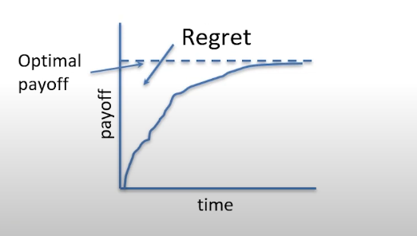

The Multi-Armed Bandit Problem
The Multi-Armed Bandit (MAB) problem is an important idea in reinforcement learning. But you don’t need to know anything about reinforcement learning to see how the idea can be applied to our lives. Simply read on.
In the MAB problem, you’re in a situation wherein you have several actions to choose from. Each time you choose an action, you might get a reward, but the reward is not the same every time. You can also not get a reward. The goal of the problem is to find which action gives the best average reward when you choose it many times.
In the perfect world, you could try each action infinite number of times and know exactly how good each one is. Unfortunately, the perfect world isn’t real-life. In real life, we would want to know which is the best action as quickly as possible. This is where regret comes in.
What’s Regret?
In the context of MAB, regret has a similar meaning to how we would use it in day-to-day lives. Regret is simply the loss due to not doing the best thing. The difference between the best action’s reward and the current action’s reward is regret.
Now, let’s see a visual representation of this.
Image Credits: Professor B. Ravindran’s Slides on Reinforce Learning
The dotted line is the best reward. The solid line is the reward due to the actions that we take. The total regret is the area between the dotted line and the solid line!
The whole problem of solving MAB reduces to minimizing regret!
How Can Regret Minimization Help Us?
The observations and solutions of the MAB problem can give us incredible insights about how to go about life. Here are the ones that I like the most:
Regret always grows over time! You can see this in the plot also. No matter how hard you try, you’re always going to regret something. Simply accepting this fact can be comforting, instead of obsessing over the regrets that you have.
When you are not sure about doing something, project yourself forward to the age of 80, and ask yourself: When I am looking back on my life, will I regret not doing this?1 This makes the decision easier in many ways.
Lastly, knowing what not to do is often more useful than knowing what to do. If we know the most common regrets that people have, we can strive to avoid those regrets. I refer you to the wonderful, The Top 5 Regrets of Dying2 on this. But here’s a quick list of the things that people regret the most:
- I wish I’d had the courage to live a life true to myself, not the life others expected of me
- I wish I hadn’t worked so hard.
- I wish I’d had the courage to express my feelings.
- I wish I had stayed in touch with my friends.
- I wish that I had let myself be happier.
Maximizing what we want in life may very well be minimizing what we don’t want in life. Regret minimization is a tool towards that.
So, as you stand at your own crossroads, ask yourself—what decision today will lead to the fewest regrets tomorrow?
Note:
The MAB is more about trying to figure out how to tackle explore-exploit dilemma, which also has interesting applications to our lives and the decisions we make. But I find this connection between regret minimization and decisions about life to be fascinating. It’s worth exploring more about the explore-exploit dilemma. See references for the same.
References
Algorithms To Live By, Tom Griffiths and Brian Christian. This is a wonderful exposition on how different computer science algorithms can be used in everyday lives. Has more details on the explore-exploit dilemma.
Regrets of the Dying by Bronnie Ware. Her Bio: Bronnie Ware spent several years caring for dying people in their homes. Her full-length memoir, The Top Five Regrets of the Dying, shares further wisdom from dying people and how Bronnie’s own life was transformed through this learning. It is available in 32 languages. http://bronnieware.com/regrets-of-the-dying.